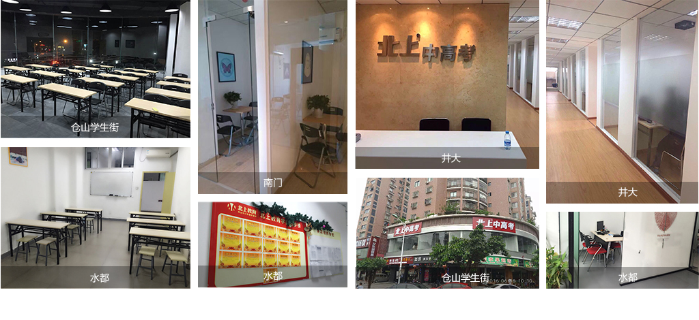

-
提分热线18906918042 ( 上午9:00-下午5:30 )
-
微信关注
提分热线18906918042 ( 上午9:00-下午5:30 )
微信关注
7年老校实力沉淀服务超10万名在校学员90%有效提分率
他们都来自北上学霸班

明星学员：夏冰
成绩波动性
北上的老师用多年以来的经验，帮我克服各种苦难，面对考试不再慌张了，下笔也从容许多。中考正常发挥，取得了一个满意的成绩，最后被格致中学录取了。

明星学员：林同学
刻苦学习类
就读于华伦中学，初中时在北上进行英语班级课补习。英语是我的弱项，因为单词记不住吃了不少亏。通过在北上学习，英语提高了十几分。

明星学员：余同学
偏科型
北上的优良的教学环境，强大的教师阵容，显著的补习成绩吸引了我，在暑假我会在北上好好努力，争取暑假弥补数学弱项，通过努力，我坚信会在新学期实现弯道超车！
明星学员：林森
偏科型
这里的老师教学经验丰富，而且还对高考跟踪研究，上课氛围轻松，条理清晰，深入浅出，精讲精练，方法独特，这对我效果非常的明显。
明星学员：周同学
恐惧数学型
初中时总是为数学困扰，偶然的机会经别人介绍来到北上，试听了一节数学课后深深为数学老师张俊满幽默的谈吐，巧妙的方法折服。
明星学员：王宏斌
严重偏科型
学习成绩还不是最重要的，最重要的是遇到挫折后面对的勇气，中考后来取得了110分，虽然也不是非 常高的高分，但是实现了孩子攻克英语的梦想。
明星学员：吴同学
上课走神型
曾经总是为学习精力不集中，容易走神，考试紧张发挥不出正常水平的问题困扰。初中时选择了北上的语文，数学和物理课，得到了极大帮助。
明星学员：吴同学
无助型
通过同学介绍和招生海报宣传了解了北上，在北上进行数学，物理，英语等多门课程补习。北上的老师都很耐心并且关爱学生，目前我在八中排名靠前。
明星学员：刘晓孟
成绩平庸型
这里的老师上课非常积极，热情，并且还是一对一的辅导，非常准确的寻找到了我的漏洞，而且方法非常的简单，易懂，这样让我学习起来就轻松容易多了。
明星学员：林天佑
理解能力差型
就读于福州三中，是通过招生海报了解到北上的。在北上，一有问题就可以直接问老师，并且能够用简单易懂的方式解决。提高了效率，提升了准确度。
明星学员：郭子轩
学习习惯差
来到北上，老师风趣幽默，亲和力强，会根据每个孩子的特点制定计划，这样也充分调动了个人的学习积极性，给我一个更广阔的想象空间。逐渐养成了良好的学习习惯。
Benchmarking teaching environment
